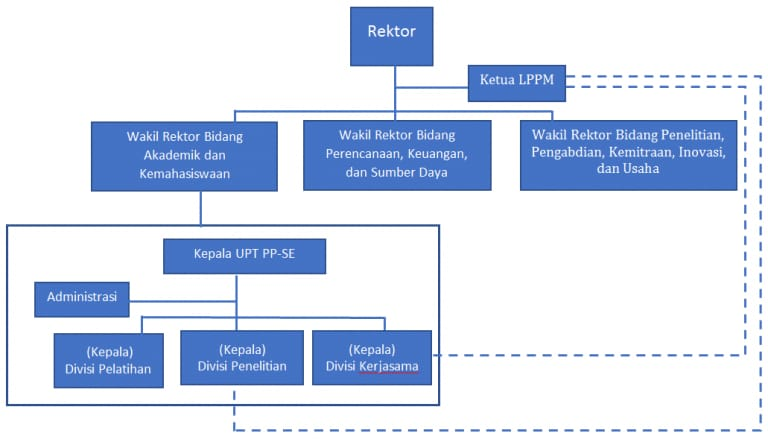
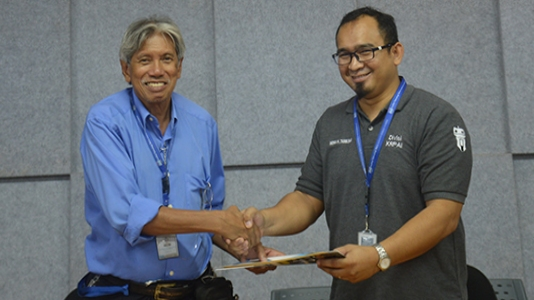

Lembaga
| No | Lembaga | Gambar | Teks |
|---|---|---|---|
| 1 | UPT PP-ESTEM |  | Sebagai pusat pengembangan pembelajaran yang unggul dan inovasi secara khusus namun tidak terbatas pada bidang Sains, Teknologi, Enginering, dan Matematika (STEM) yang berkualitas, efisien, efektif, produktif, dan akuntabel. |
| 2 | Sistem Penjaminan Mutu (SPM) |  | Sesuai arahan dari Direktorat Jenderal Pendidikan Tinggi tentang penjaminan mutu perguruan tinggi yang terdiri atas penjaminan mutu internal dan penjaminan mutu eksternal, maka Institut Teknologi Del sebagai institusi pendidikan yang hendak menghasilkan sumber daya manusia dengan kompetensi yang baik harus mewujudkan arahan tersebut. Untuk itu dibentuklah SPM IT Del, pada tanggal 14 November 2008. |
| 3 | Pusat Modal Manusia (PMM) | Pusat Modal Manusia berada di bawah dan bertanggung jawab kepada Wakil Rektor Bidang Perencanaan, Keuangan, dan Sumber Daya. Tugas pokok Pusat Modal Manusia adalah mengelola modal manusia dalam rangka mewujudkan visi, misi, dan tujuan institusi. Wewenang Pusat Modal Manusia meliputi:Perencanaan, Penempatan, dan Pengembangan Pegawai. |
|
| 4 | Koperasi | KSU IT Del merupakan Koperasi Serba Usaha (KSU) IT Del dimulai kembali pada tanggal 8 Agustus 2008 sampai dengan saat ini, tahun 2014. KSU IT Del didirikan berdasarkan badan hukum dengan No Badan Hukum No : 49.A / BH / KUKM-TS / 2004, per tanggal 7 April 2004. Yang menjadi anggota KSU IT Del adalah dosen, staff, karyawan dan mahasiswa. |